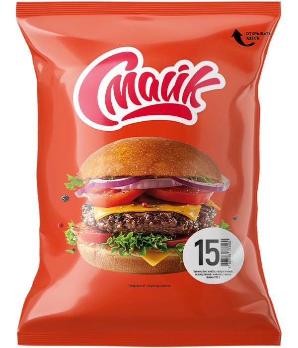

Бутерброд №15

Состав:
булочка Биг, колбаса полукопченая, майонез, огурец свежий, чеснок.
Масса нетто:
185 г.
Пищевая и энергетическая ценность в 100 г продукта (средние значения):
Белки
– 7,5 г.
Жиры
– 15,0 г.
Углеводы
– 29 г.
Калорийность
– 280 ккал / 1160 кДж.
Закрыть окно